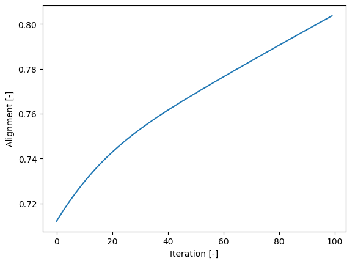
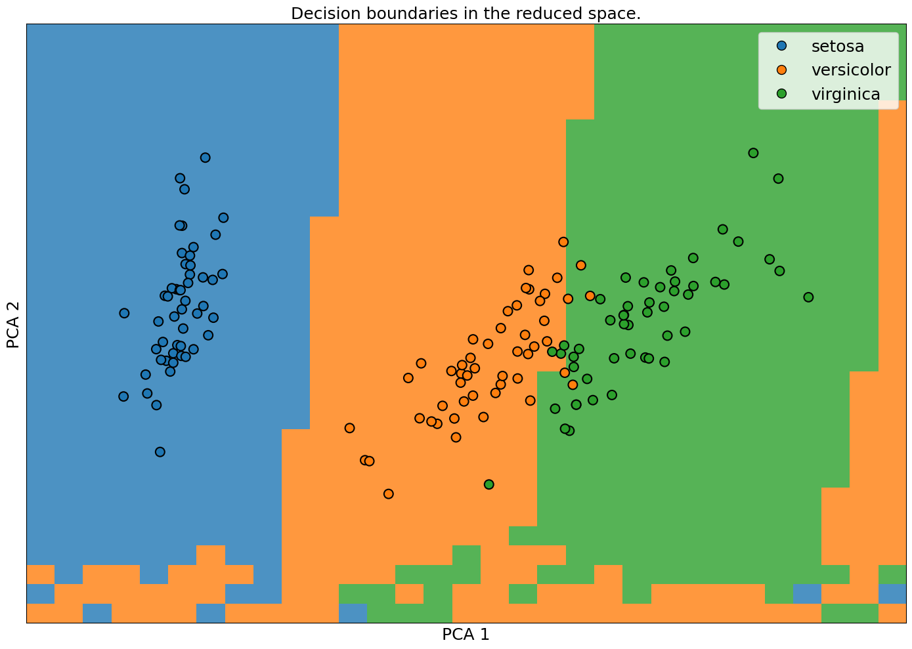
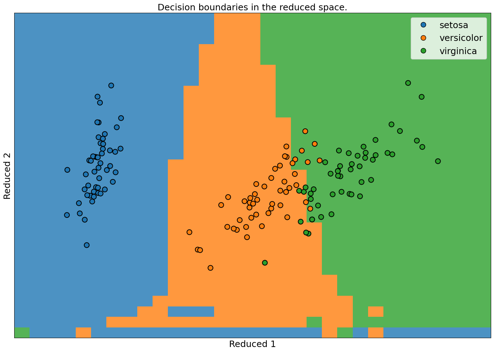
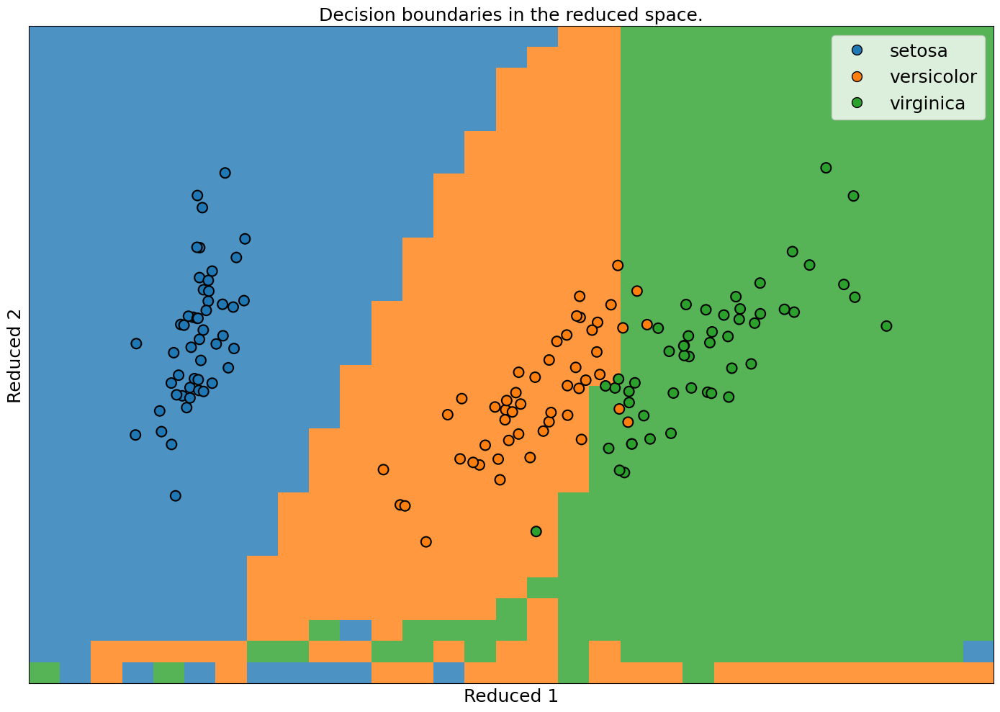

Contents:
- MatchCake
- Description
- Installation
- Quick Usage Preview
- Tutorials
- For Developers
- Notes
- About
- Important Links
- Found a bug or have a feature request?
- License
- Citation
Tutorials:
- Tutorials
- MatchCake Example
- Setup
- Imports
- Create the NonInteractingFermionicDevice
- Define the circuit
- Create the QNode
- Define the hyperparameters of the circuit
- Draw the circuit
- Evaluate the QNode
- Print the expectation values
- Expectation Values
- Probabilities
- Iris classification with FermionicPQCKernel
- Setup
- Imports
- Parameters
- Load the data
- Split the data
- Build the SKlearn Pipeline
- Train the model
- Evaluate the Pipeline
- Visualize the results
- Nystroem Kernel Approximation
- Setup
- Imports
- Parameters
- Load the data
- Split the data
- Build the SKlearn Pipeline
- Train the model
- Evaluate the Pipeline
- Visualize the results
Theory:
Modules:
Iris classification with FermionicPQCKernel¶
|
|
|
 View source on GitHub View source on GitHub
|
|
In this example, you will see how to do data classification with the FermionicPQCKernel from the MatchCake package. The FermionicPQCKernel is a kernel that encode the data into fermionic rotations gates before using fSWAP gate to entangle the nearest neighbours qubits together.
Setup¶
You can now install the dependencies by running the following commands:
# @title Install dependencies {display-mode: "form"}
RunningInCOLAB = "google.colab" in str(get_ipython()) if hasattr(__builtins__, "__IPYTHON__") else False
if RunningInCOLAB:
!pip install matchcake
Imports¶
First, we need to import the necessary packages. We will use the datasets module from sklearn to load the Iris dataset, the train_test_split function to split the dataset into training and testing sets, and the MinMaxScaler to scale the data and others.
import seaborn as sns
from sklearn import datasets
from sklearn.model_selection import train_test_split
from sklearn.pipeline import Pipeline
from sklearn.preprocessing import MinMaxScaler
from sklearn.svm import SVC
from matchcake.ml.kernels import FermionicPQCKernel
from matchcake.ml.kernels.linear_nif_kernel import LinearNIFKernel
from matchcake.ml.visualisation import ClassificationVisualizer
Parameters¶
We will define our hyperparameters here. We will use 4 qubits to encode the data.
n_qubits = 4
Load the data¶
We will load the Iris dataset.
dataset = datasets.load_iris(as_frame=True)
X, y = dataset.data, dataset.target
Split the data¶
We will split the data into training and testing sets.
x_train, x_test, y_train, y_test = train_test_split(X, y, test_size=0.2, random_state=0)
Build the SKlearn Pipeline¶
We will build the model using the FermionicPQCKernel.
pipline = Pipeline(
[
("scaler", MinMaxScaler(feature_range=(0, 1))),
("kernel", FermionicPQCKernel(n_qubits=n_qubits, rotations="X,Z").freeze()),
("classifier", SVC(kernel="precomputed")),
]
)
As for comparison, we can compare the FermionicPQCKernel with the LinearNIFKernel which use a linear layer to generate fermionic parameters.
linear_pipline = Pipeline(
[
("scaler", MinMaxScaler(feature_range=(0, 1))),
("kernel", LinearNIFKernel(n_qubits=n_qubits)),
("classifier", SVC(kernel="precomputed")),
]
)
We also build a pipeline with the aligned version of the LinearNIFKernel to see how alignment can help to improve the performance.
aligned_linear_pipline = Pipeline(
[
("scaler", MinMaxScaler(feature_range=(0, 1))),
("kernel", LinearNIFKernel(n_qubits=n_qubits, alignment=True)),
("classifier", SVC(kernel="precomputed")),
]
)
Train the model¶
We will train the model using the training data.
pipline.fit(x_train, y_train)
Pipeline(steps=[('scaler', MinMaxScaler()),
('kernel', FermionicPQCKernel(n_qubits=4, rotations='X,Z')),
('classifier', SVC(kernel='precomputed'))])In a Jupyter environment, please rerun this cell to show the HTML representation or trust the notebook. On GitHub, the HTML representation is unable to render, please try loading this page with nbviewer.org.
Pipeline(steps=[('scaler', MinMaxScaler()),
('kernel', FermionicPQCKernel(n_qubits=4, rotations='X,Z')),
('classifier', SVC(kernel='precomputed'))])MinMaxScaler()
FermionicPQCKernel( (encoder): Flatten(start_dim=1, end_dim=-1) )
SVC(kernel='precomputed')
linear_pipline.fit(x_train, y_train)
Pipeline(steps=[('scaler', MinMaxScaler()),
('kernel', LinearNIFKernel(n_qubits=4)),
('classifier', SVC(kernel='precomputed'))])In a Jupyter environment, please rerun this cell to show the HTML representation or trust the notebook. On GitHub, the HTML representation is unable to render, please try loading this page with nbviewer.org.
Pipeline(steps=[('scaler', MinMaxScaler()),
('kernel', LinearNIFKernel(n_qubits=4)),
('classifier', SVC(kernel='precomputed'))])MinMaxScaler()
LinearNIFKernel(
(encoder): Sequential(
(0): Flatten(start_dim=1, end_dim=-1)
(1): Linear(in_features=4, out_features=28, bias=True)
(2): Identity()
)
)SVC(kernel='precomputed')
aligned_linear_pipline.fit(x_train, y_train)
Pipeline(steps=[('scaler', MinMaxScaler()),
('kernel', LinearNIFKernel(alignment=True, n_qubits=4)),
('classifier', SVC(kernel='precomputed'))])In a Jupyter environment, please rerun this cell to show the HTML representation or trust the notebook. On GitHub, the HTML representation is unable to render, please try loading this page with nbviewer.org.
Pipeline(steps=[('scaler', MinMaxScaler()),
('kernel', LinearNIFKernel(alignment=True, n_qubits=4)),
('classifier', SVC(kernel='precomputed'))])MinMaxScaler()
LinearNIFKernel(
(encoder): Sequential(
(0): Flatten(start_dim=1, end_dim=-1)
(1): Linear(in_features=4, out_features=28, bias=True)
(2): Identity()
)
)SVC(kernel='precomputed')
Evaluate the Pipeline¶
We will evaluate the pipeline using the testing data.
pipline["kernel"].freeze()
test_accuracy = pipline.score(x_test, y_test)
print(f"Test accuracy: {test_accuracy * 100:.2f}%")
Test accuracy: 90.00%
linear_pipline["kernel"].freeze()
test_accuracy = linear_pipline.score(x_test, y_test)
print(f"Test accuracy: {test_accuracy * 100:.2f}%")
Test accuracy: 86.67%
aligned_linear_pipline["kernel"].freeze()
test_accuracy = aligned_linear_pipline.score(x_test, y_test)
print(f"Test accuracy: {test_accuracy * 100:.2f}%")
Test accuracy: 96.67%
First we see that the test accuracy with the aligned kernel is better than wihtout alignment, which shows that the alignment can help to improve the performance of the model. Another thing we can do is to look at the evolution of the alignment through the optmization process.
ax = sns.lineplot(aligned_linear_pipline["kernel"].opt_.history)
ax.set_xlabel("Iteration [-]")
ax.set_ylabel("Alignment [-]")
display(ax.figure)

Visualize the results¶
We can visualize the decision boundaries of the model.
viz = ClassificationVisualizer(x=X, n_pts=1_000)
fig, ax, y_pred = viz.plot_2d_decision_boundaries(
model=pipline, y=y, legend_labels=getattr(dataset, "target_names", None), show=True
)

fig, ax, y_pred = viz.plot_2d_decision_boundaries(
model=linear_pipline, y=y, legend_labels=getattr(dataset, "target_names", None), show=True
)

fig, ax, y_pred = viz.plot_2d_decision_boundaries(
model=aligned_linear_pipline, y=y, legend_labels=getattr(dataset, "target_names", None), show=True
)
